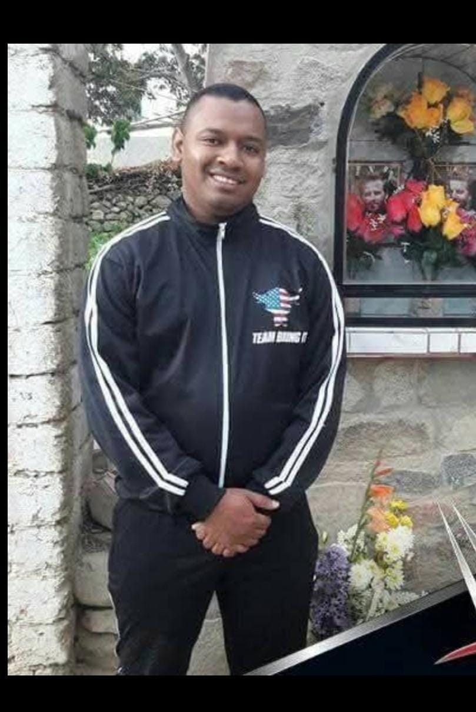
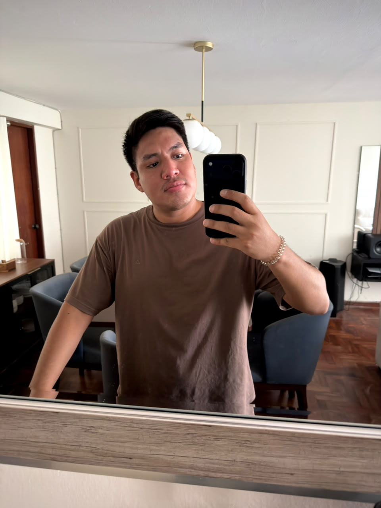

Más de 15 años de fe, servicio y fraternidad. Cada generación dejó su huella en esta historia de luz y esperanza.
Orígenes
Todo comenzó con jóvenes que culminaron su Confirmación y querían seguir creciendo en la fe juntos. Así nació la necesidad de crear un espacio propio dentro de la Parroquia Nuestra Señora de la Piedad.
Cronología
Conoce a los responsables de cada período. Cada coordinator, subcoordinador y asesor dejó su huella en esta historia.
El primer grupo encargado de dar forma al sueño de crear el grupo juvenil. Encargados de organizar reuniones, actividades y mantener la llama encendida desde el inicio.

Se mantiene la estructura del grupo mientras se consolidan las reuniones semanales de los sábados, conocidas ahora como "Sábados de Luxto".
Se establece el rol de coordinador general y se formaliza la figura del asesor espiritual para guiar al grupo desde la fe.
Se incorporan subcoordinadores para distribuir responsabilidades y el grupo sigue creciendo en número y en compromiso con la parroquia.
El grupo sigue madurando. Se establece el coro parroquial como forma concreta de servicio a la comunidad.
Una nueva generación asume el liderazgo. El grupo sigue siendo un espacio de crecimiento para jóvenes post-Confirmación.
Período marcado por desafíos globales. El grupo se adapta y sigue unido, fortaleciendo el compromiso con la fe y la comunidad.

El período más reciente. El grupo sigue creciendo con nuevas actividades, retiros y un fuerte compromiso con la comunidad.